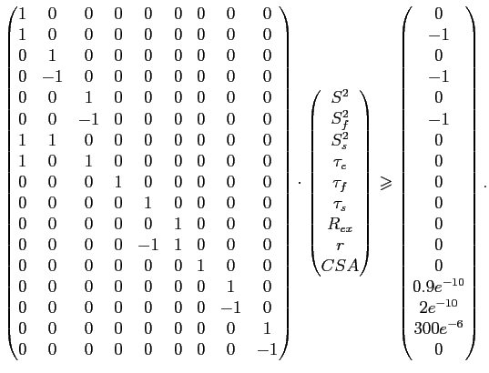
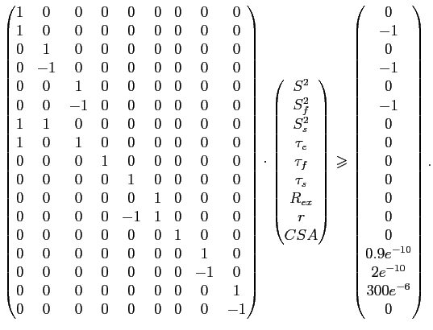

Next: Minimisation concepts Up: Values, gradients, and Hessians Previous: Values, gradients, and Hessians Contents Index
A word of warning before reading this chapter, the topics covered here are quite advanced and are not necessary for understanding how to either use relax or to implement any of the data analysis techniques present within relax. The material of this chapter is intended as an in-depth explanation of the mathematics involved in the optimisation of the parameters of the model-free models. As such it contains the chi-squared equation, relaxation equations, spectral density functions, and diffusion tensor equations as well as their gradients (the vector of first partial derivatives) and Hessians (the matrix of second partial derivatives). All these equations are used in the optimisation of models  to 
; models
to 
; models  to
to  ; the ellipsoidal, spheroidal, and spherical diffusion tensors; and the combination of the diffusion tensor and the model-free models.
; the ellipsoidal, spheroidal, and spherical diffusion tensors; and the combination of the diffusion tensor and the model-free models.